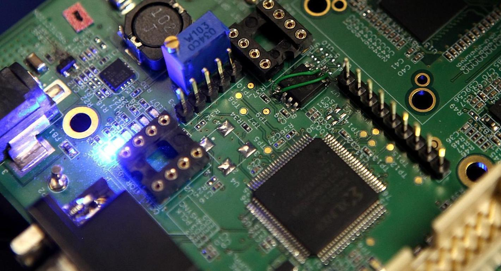

Overview
International Journal of Information Technology is a platform for the dissemination of original, scientific, theoretical or applied
research in the fields of Computer Sciences and allied fields
- Publishes original research in the numerous fields of Computer Science and Information Technology.
- Features empirical models, formal techniques, and applications in varied domains of Computer Science.
- Aims to bridge the gap between research and practice by promoting industry-relevant research.
- Provides a platform for strong empirical component in research.
- The journal is indexed on Scopus.
Editor-in-Chief
ABCFor Authors

Latest Article
How do semiconductors, artificial intelligence, geopolitical risk, and their moderating effects shape renewable energy production in leading semiconductor manufacturing countries?
Muhammad Qamar Rasheed, Zhao Yuhuan, Marina Nazir, Zahoor Ahmed, Xiaohong Yu
Original Research | 5th October 2024
 Research Paper On Artificial Intelligence And It’s Applications
Research Paper On Artificial Intelligence And It’s Applications
N.H.PatilS, H.Patel, S.D.Lawand
Original Research | 26th December 2023
 Artificial intelligence in healthcare: transforming the practice of medicine
Artificial intelligence in healthcare: transforming the practice of medicine
Junaid Bajwa, Usman Munir, Aditya Nori, Bryan Williams
Original Research | 19th July 2021
Impact of modern technology in education
R.Raja, P.C.Nagasubramani
Original Research | 15th May 2018